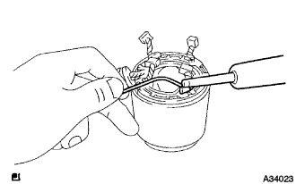

Starter ASSY overhaul (detachment / disassembly) |
| 1. Starter magnet switch asset |
Remove the nut and separate the harness from the C terminal.
 |
Remove the two nuts, remove the moving studs from the pinoon drama while lifting the front of the magnet switch, and remove the magnet switch.
| 2. Starter York ASSY removed (Starter 0.8kw) |
Remove the two through bolts and remove the York and the pinoon drama.
| 3. Starter York ASSY removed (starter 1.0 kW) |
Remove the two through bolts and remove the york.
Take off the O -ring.
| 4. Starter Koteta End Frame is removed (Starter 0.8kw) |
Take off the concrete end frame.
| 5. Starter Conmutta End Frame ASSY removes (starter 1.0 kW) |
Remove the two screws and remove the concrete end frame.
Take off the O -ring.
| 6. Starter braispring removed (Starter 0.8kw) |
Fix the shaft part of the armacha to the vise.
Take off the plate.
 |
Remove the four brush plings.
Remove the brush folder insulator.
| 7. Starter brush holder ASSY removes (starter 1.0 kW) |
Use a flathead screwdriver to cause a brush spring to separate the brush holder.
Cut off the four brushes and remove the brush holder.
 |
Take off the brush spring.
| 8. Starter Armacha ASSY removes |
| 9. Remove the starter clutch (Starter 0.8kw) |
Fix the armacha to the vise.
Remove the pinion stop nut (outa).
Use a flathead screwdriver to move the pinoon stop nut (inner) to the clutch side.
Use a flathead screwdriver to remove the snap ring.
Remove the pinoon stop nut and clutch.
| 10. Starter clutch removed (starter 1.0 kW) |
Remove the driver, starter clutch and shock absorber bearing from Starter Housing.
Use a flathead screwdriver to move the pinoon stop color to the clutch side.
 |
Use a flathead screwdriver to remove the snap ring.
Remove the pinoon stop nut and clutch.
| 11. Starter Armacha ASSY inspection |
Use SST (Toyota Electrical Tester) to measure resistance between concrete and armapil core.
 |
Use SST (Toyota Electrical Tester) to confirm whether there is a conduction between each segment.
 |
The V -block supports both ends of the armacha and the swing of the armacha is measured using a dial gauge and a dial gather plane measuring person.
The outer diameter of the concrete is measured using a caliper.
The depth of the undercut between the segments is measured using the caliper.
| 12. Fishd coil inspection |
 |
Use SST (Toyota Electrical Tester) to confirm whether there is an conductor between the field coil brush lead and the C terminal harness.
Use SST (Toyota Electrical Tester) to measure resistance between field coil bra -sili and starter yoke.
| 13. Brush inspection |
The length of the brush central part is measured using a caliper.
| 14. Brush replacement (Starter 0.8kw) |
Cut the braSyled wire on the terminal side.
 |
Shave the bra -seiled wire with a file.
Press the plate portion of the replenishment brush to the lead welding side of the terminal.
|  |
Solder on the crimp.
| 15. Brush replacement (starter 1.0 kW) |
Cut the braSyled wire on the terminal side.
Shave the welding marks of the bra -seiled wire to correct the terminal to the standard dimensions.
 |
Press the plate portion of the replenishment brush to the lead welding side of the terminal.
| 16. Starter brush holder ASSY inspection (starter 1.0 kW) |
Use SST (Toyota Electrical Tester) to measure resistance between the plus brush holder and the minus brush holder.
| 17. Starter clutch inspection |
 |
Lock when the pinion gear is rotated to the left, and check that it rotates smoothly when rotating to the right.
| 18. Starter magnet switch ASSY inspection |
 |
When the plunger is pushed in and released, make sure that you return to the original position quickly.
 |
Use SST (Toyota Electrical Tester) to confirm whether there is an conductor between 50 terminals and C terminals.
 |
Use the SST (Toyota Electrical Tester) to check whether there is an conductor between 50 terminals and magnet switch bodies.
| 19. Starter clutch installation (Starter 0.8kw) |
Apply Denso 50 grease to the clutch bush, the spline and the pinoon -top nut.
Attach a clutch and a pinion top nut to the armacha.
Apply Denso 50 grease to the new snap ring and attach it to the groove of Armacha.
Compress the snap ring with the vise.
Hold the outer periphery of the clutch by hand, use a plastic hammer, hit the armacha lightly, and move the pinoN -top nuts on the snapping.
Attach a pinion stop nut (outa).
| 20. Starter clutch installation (starter 1.0 kW) |
Apply Denso 50 grease to the clutch bush, the spline and the pinoon -top nut.
 |
Attach a clutch and a pinion top nut to the planet carrier shaft.
Apply Denso 50 grease to the snap ring and attach it to the planet carrier shaft groove.
 |
Compress the snap ring with the vise.
 |
Hold the outer periphery of the clutch with your hand, use a plastic hammer to lightly hit the planet carrier shaft, and move the pinion top nut on the snapping.
Apply Denso 50 grease to each hit surface of the pinnion driver's housing, clutch, and moving studs.
Attach a pinoon drama to the clutch.
Attach a shock absorber bearing by matching the notches of the drive housing and the convex part of the shock absorber bearing.
| 21. Starter Armacha ASSY installation |
| 22. Starter braispring installation (starter 0.8kw) |
Fix the shaft part of the armacha to the vise.
Attach the brush folder insulator.
|
Attach 4 brush springs.
Attach the plate.
| 23. Starter brush holder ASSY installation (starter 1.0 kW) |
Attach the brush spring.
Attach the brush holder.
|
Use a flathead driver to raise a brush spring and attach a brush
| 24. Starter Knotter End Frame ASSY Installation (Starter 0.8kw) |
Attach the cover.
Attach the concrete end frame.
| 25. Starter Conmuta End Frame ASSY installation (Starter 1.0kw) |
Apply the engine oil to the inner periphery of the starter flange bearing.
Attach a new O -ring.
Attach the concrete end frame with two screws.
| 26. Starter York ASSY installation (Starter 0.8kw) |
Apply Denso 50 grease to each hitting surface of pinnion driver housing, clutch and moving studs.
 |
Attach the pinoon drama to the yoke and attach it with two bolts.
| 27. Starter York ASSY installation (Starter 1.0 kW) |
Attach the O -ring.
Combine the concave part of the yoke and the convex part of the shock absorber bearing, and attach the yoke with two bolts.
| 28. Starter magnet switch assigned |
Hook the moving stud from the upper side of the pinoon drama and attach the magnet switch with two nuts.
Attach the harness to the C terminal with a nut.